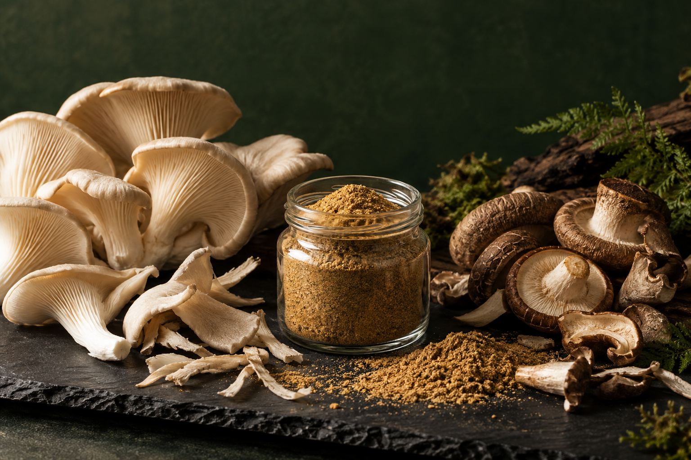

Ý TƯỞNG THỰC PHẨM BỀN VỮNG · FID 2026
Từ phần nấm bị bỏ lại đến vị ngon được giữ lại.
Phát triển bột gia vị từ phụ phẩm nấm ăn còn phù hợp làm thực phẩm, hướng tới giảm thất thoát nguyên liệu và tạo thêm giá trị trong chuỗi chế biến.
Bản giới thiệu ý tưởng · Chưa phải sản phẩm đã thương mại hóa

01 / VẤN ĐỀ & GIẢI PHÁP
Không phải phần thừa nào cũng là rác.
Trong quá trình sơ chế nấm ăn, những phần cắt tỉa hoặc nấm lệch kích cỡ có thể bị loại khỏi dòng bán tươi dù vẫn có khả năng sử dụng làm thực phẩm. Ý tưởng này thu gom phần nấm ăn được, có nguồn gốc rõ ràng, rồi phát triển thành bột gia vị tạo vị umami.
Đề tài phù hợp với định hướng “Food security & Sustainable food value chain” của FID 2026. Hiệu quả giảm lãng phí thực tế cần được đo từ dòng nguyên liệu đầu vào, tỷ lệ loại bỏ và sản lượng thành phẩm tại từng cơ sở.
02 / TỪ NGUYÊN LIỆU ĐẾN SẢN PHẨM
Một vòng đời mới
cho nấm ăn.
Sơ đồ dưới đây là định hướng thử nghiệm. Thông số vận hành phải được xác lập và thẩm định bằng nghiên cứu thực tế.
- 01
Phân loại tại nguồn
Chỉ nhận phần nấm ăn được, còn tươi, có hồ sơ lô và điều kiện bảo quản phù hợp.
- 02
Làm sạch & sơ chế
Loại bỏ tạp chất và phần không đạt; ghi lại khối lượng trước, sau phân loại.
- 03
Làm khô có kiểm soát
Thử nghiệm điều kiện sấy phù hợp với chất lượng cảm quan và chỉ tiêu an toàn.
- 04
Nghiền, phối trộn & đóng gói
Đánh giá độ đồng đều, độ ẩm, hoạt độ nước, độ ổn định và bao bì bảo vệ sản phẩm.
03 / CÔNG CỤ THỬ NHANH
Một mẻ nấm sẽ cho ra bao nhiêu bột?
Thay các giả định bằng số liệu của bạn để hình dung cân bằng vật chất. Kết quả chỉ là ước tính lý thuyết, chưa tính đầy đủ biến động quy trình và không chứng minh chất lượng hay an toàn sản phẩm.
Khối lượng bột ≈ nấm đầu vào × tỷ lệ đạt × (1 − ẩm ban đầu) ÷ (1 − ẩm mục tiêu) × (1 − hao hụt chế biến)
Giá trị mặc định chỉ để minh họa phép tính, không phải kết quả nghiên cứu hay thông số khuyến nghị.
04 / TRƯỚC KHI ĐƯA RA THỊ TRƯỜNG
Giá trị bền vững cần đi cùng an toàn thực phẩm.
Việc tận dụng phụ phẩm cho thực phẩm đòi hỏi đánh giá an toàn riêng, truy xuất nguồn gốc và kiểm chứng chất lượng; không thể suy ra tính an toàn chỉ từ quá trình sấy hay nghiền.
Đầu vào — xác nhận loài nấm, điều kiện thu gom, thời gian bảo quản và tiêu chí loại bỏ.
Quy trình — thiết lập thông số sấy, vệ sinh thiết bị và điểm kiểm soát nhiễm chéo.
Thành phẩm — kiểm nghiệm vi sinh, độ ẩm, hoạt độ nước, cảm quan và độ ổn định bảo quản theo yêu cầu áp dụng.
Hiệu quả — cân đo lượng nguyên liệu thực sự được tận dụng và đánh giá chi phí, bao bì, năng lượng.
Ý TƯỞNG DỰ THI FID 2026
Giảm lãng phí bắt đầu từ việc nhìn lại giá trị của nguyên liệu.
Website này là bản mô tả ý tưởng và công cụ minh họa cho giai đoạn nghiên cứu. Kết luận về hiệu quả, thời hạn sử dụng và khả năng thương mại hóa cần dữ liệu thử nghiệm, kiểm nghiệm và đánh giá thị trường.
Về đầu trang